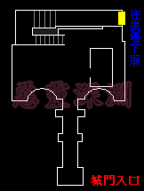
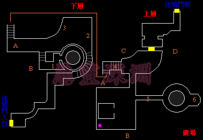
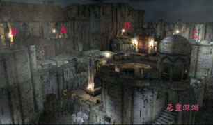
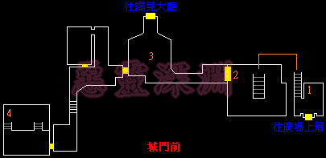
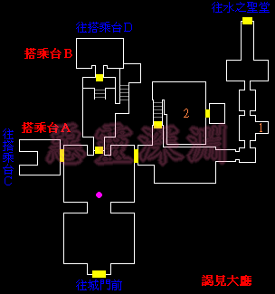
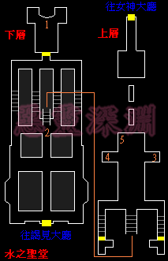

|
惡靈古堡～惡靈古堡４----地圖攻略～3-1
|
|
攻略內容以Normal為主，地圖上的紫色圓點●表示高價寶物的位置 ，標綠色的道具則是過關必須的重要道具。
 城門入口有武器商人。 購物指南（new）：
在這裡除了購買L號手提包、古城藏寶圖之外，推薦購買半自動來福槍（ライフル（セミオート））和其使用的高倍率狙 擊鏡（スコープ（セミオートライフル））。如果身上一把來福槍都沒有的話，接下來會很辛苦，務必要購買。 地雷發射 器搭配狙擊鏡也很具實用性，但是彈藥數較少，不過價格上倒是相當便宜。有剩餘的ptas就用來升級武器。 附近有道具，小心木箱中有一條蛇。
 沿著路前進，看到編號1的地方有兩個邪教徒，可以朝他們射擊引誘他們跑過來。上迴旋樓梯後敵人會從高處使用投石機攻擊，順 便把那兩個邪教徒也解決。建議在編號2處狙擊高台Ａ的紅色油桶或邪教徒，在編號3處狙擊高台Ｂ的紅色油桶，沒買高倍率狙擊鏡 的玩家狙擊高台Ｂ可能比較吃力，待會到上層再狙擊也無妨。
 上樓梯後會有兩個邪教徒從下層過來，別把Ashley留在下面，怕被夾擊的話就回頭解決再繼續前進。 在編號4的地方狙擊前方小屋窗口的邪教徒，高台Ｂ也可以在此狙擊；躲進邪教徒藏身的小屋，從窗口狙擊高台Ｃ；在編號5的地方 有個可以狙擊的孔，狙擊高台Ｄ的邪教徒，超過編號5時，高台Ｄ會朝玩家攻擊，也可躲到編號6來狙擊。
把威脅都清光後，操作圓台上的機關，將下層的大炮移上來，再用大砲轟開大門。角落的高價寶物是金の腕輪（金的手環）。 大門後面有個武器商人，往城門前的火把上有寶石。 購物指南（new）：
 進入房間會看到正前方編號1處有一把黃金的寶劍，二樓有邪教徒，編號2的地方也有一把白銀的寶劍，想要把門打開，方法就是將 這兩把劍的位置互換，不過在二樓有三個邪教徒，上到二樓一段時間後一樓也會出現好幾個邪教徒。二樓的位置不太適合戰鬥，儘 可能在樓梯就把邪教徒解決。 在編號3的地方遇到Luis，劇情結束後可以把Ashley留在這裡，這裡很安全。玩家要去拿在編號4的城正門的鑰匙，路上有許多邪教徒 ，拿到鑰匙的時候，也會有一批邪教徒衝入房間，趕緊射擊門旁的油桶來解決。 用鑰匙打開城門，往謁見大廳。
 謁見大廳會遇見Salazar，接近中央通道時門會堵上，需要搜集三塊拼板才能打開。別忽略了高牆上的高價寶物仮面の宝石（紫）（ 面具的寶石＿紫）。現在只能往右邊的門。先到編號1拿地下牢的鑰匙，用來打開往編號2地下牢的門，附近牆上有File Luis的搜索命 令，Saddler畫像後面有好東西，別忘了去調查。把Ashley留在地下牢外面，先觀察一下地下牢的情況，左右兩邊各有一個鐘，中央 的小牢房囚禁著一個長相怪異的「人」，他就是鐵爪男加拉多，把門打開之後，只要踏進去就會觸動他開始攻擊。 BOSS戰： 加拉多的雙眼已經失去功用，完全是以聽覺來行動，所以玩家的腳步聲、槍械聲，都有可能會引起他的攻擊，一開始踢開門後，可 以以倒退的方式進入小牢房，一聽到加拉多掙脫枷鎖的聲音立刻跑離，左右兩邊的鐘用槍射擊，加拉多就會去攻擊發出聲音的鐘， 而他長長的爪子攻擊到牆壁時會陷入壁中，這時就瞄準他背上的寄生獸來攻擊，使用地雷發射器或是用來福槍狙擊都很適合。要特 別注意，射擊鐘時不要離加拉多太近，不然加拉多還是會朝玩家攻擊。鐘是會被破壞的，保持距離來戰鬥吧。 擊敗加拉多後，進入小牢籠中拉下把手，編號1附近的火焰就會停止，小心會出現一批邪教徒，利用紅色油燈來解決。原本噴火焰 的地方，有持弓的和丟炸藥的邪教徒。
 一進入水之聖堂就要面對一批邪教徒，而且過一會敵方還有援軍，建議可以在進入水之聖堂後直接衝入編號1的小房間來應戰，好避 免Ashley有危險，這個房間裡兩個角落各有一塊黃色的地板，站上去的時候會往下壓，讓Ashley和Leon分別站在地板上，編號2的地方 出現一個轉軸，轉動後會降下通往水之聖堂上層的樓梯，在上層發現高台上有兩個轉軸，但是卻沒有梯子可以上去，只能在編號3或 4的地方讓Ashley獨自上去，Ashley會自己行動去轉動兩個轉軸，Leon必須掩護Ashley，高台左右的兩個門會不停出現沒有武器的邪教 徒想要抓走Ashley，Leon所在的樓層也不得安寧，有邪教徒會從下層的樓梯處過來，最好在編號5這樣的角落來觀察，當有邪教徒朝 Leon來的時候，應該要優先對付，樓上的邪教徒動作反而比較慢，而且就算Ashley被抓，只要在邪教徒到門之前攻擊即可， 用來福槍 來狙擊。Ashley完成後，要趕快讓Leon去接她下來。 跳過浮起的地板離開。
女神大廳周圍有道具，中央其中一個女神像上有寶石，找武器商人整理裝備。 購物指南（new）：
武器商人旁邊有個藍色的門，進去可以進行射擊小遊戲，櫃檯上拿取File關於射靶，這樣的打靶場以後的遊戲中還會有，什麼時候玩 都可以。
走入中央的通道，Ashley再次被抓走，本章節結束。
疑難解答
仮面の宝石＿紫（面具的寶石＿紫） 3000ptas 在上一個章節已經拿到面具的寶石＿紫的玩家，仍然請把寶石留下來，日後還有機會可以拿到另一個有凹槽的面具。
話，蛋是會破掉消失的喔，畢竟只是蛋嘛。 未經許可禁止轉載連結 |
||||||||||||||||||||||||||||||||||||||||||||||||||||||||||||||||||||||||||||||||||||||||||||||||||||||||||||||||||||||||||||||||||||||||||||||||
惡靈深淵Biohazard Abyss http://98.to/coolbio